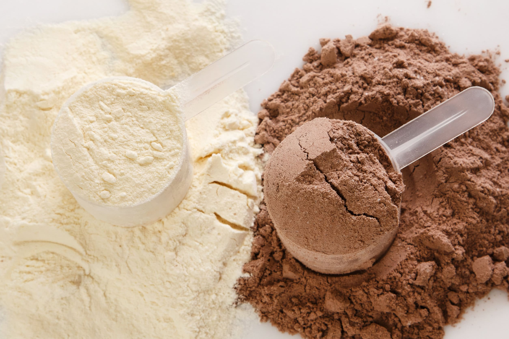
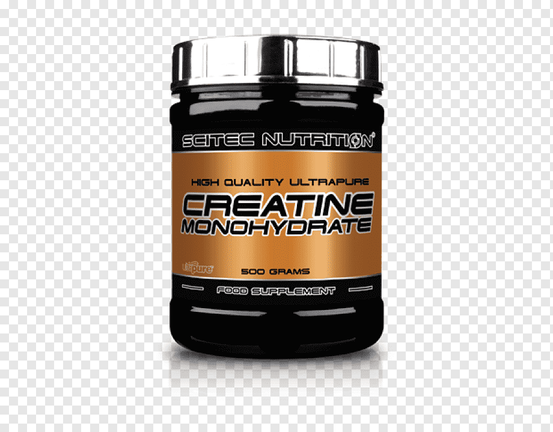
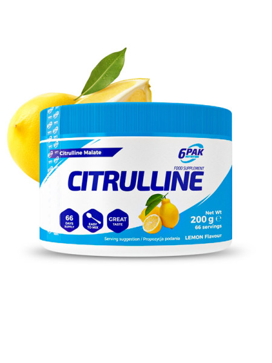
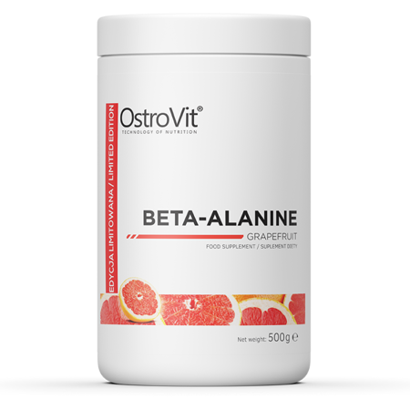
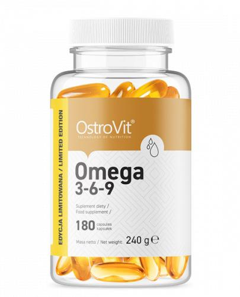

Suplementacja
Białko serwatkowe
Suplement białkowy, który dostarcza łatwo przyswajalne białko niezbędne do budowy i regeneracji mięśni.
Kreatyna
Suplement zwiększający wydolność i siłę mięśni, przyspieszający regenerację i poprawiający masę mięśniową.
Cytrulina
Aminokwas wspierający produkcję tlenku azotu, który wpływa na rozszerzenie naczyń krwionośnych, poprawiając przepływ krwi i dostarczanie składników odżywczych do mięśni.
Betalanina
Aminokwas wspomagający wytrzymałość i opóźniający występowanie zmęczenia mięśniowego podczas intensywnego treningu.
Omega-3
Suplement zawierający nienasycone kwasy tłuszczowe, które korzystnie wpływają na zdrowie serca, układu nerwowego i procesy zapalne w organizmie.
Pamiętaj, że suplementacja powinna być uzupełnieniem odpowiedniej diety i nie zastępuje zdrowego odżywiania.